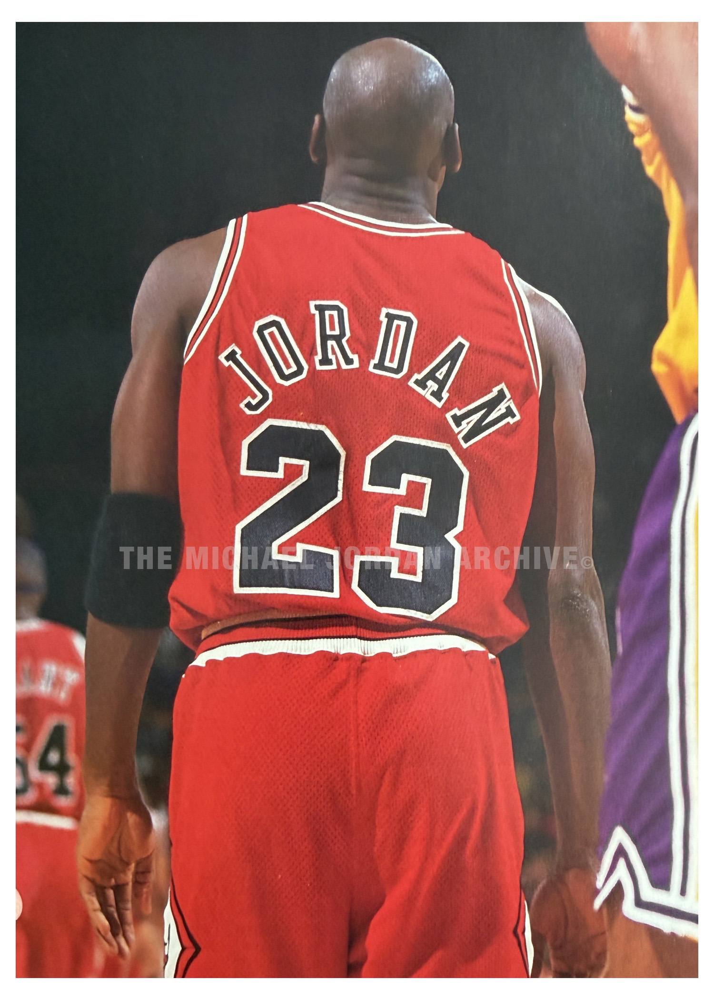
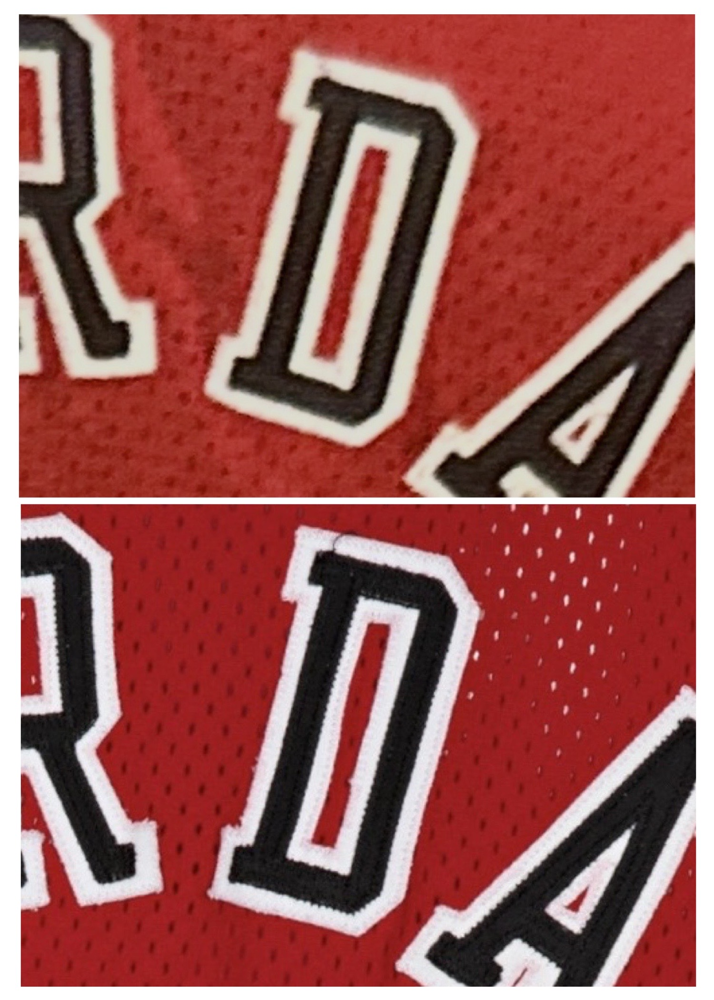

1992–93 Chicago Bulls — Road Uniform
Chicago Bulls vs. Los Angeles Lakers
Image Evidence

Game imagery vs. Los Angeles — November 20, 1992.

Game image crop comparison to artifact.
Findings Summary
Source imagery was first identified in a period publication depicting a Los Angeles Lakers opponent. Cross-referencing the Bulls' 1992–93 schedule isolates a single corresponding game date. Comparative analysis of construction, mesh alignment, and garment-specific wear characteristics confirms use during the November 20, 1992 game versus Los Angeles.
- Mesh hole alignment within the “JORDAN” name on back consistent across all examined frames
- Distinct mesh alignment surrounding the outer border of the letter “D” conclusively matched
- Distinct white border alignment on the inner portion of letter “D” conclusively matched
- Unique short loose black thread visible on the top left, upper corner, of the letter "D"
Provenance & Documentation
Provenance
This uniform has passed a second authenticator and photomatch service utiliziing our research.
Supporting Documentation
- Letter of Authenticity (LOA): Yes
- Source Material: Archive Imagery & Negative film
- Internal Reference ID: CF-0003-uni-1993
Notes
Our independent research work documented an additonal 17 games.